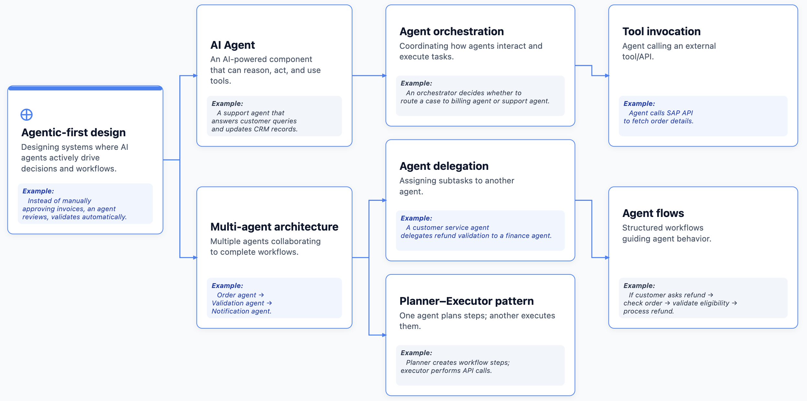
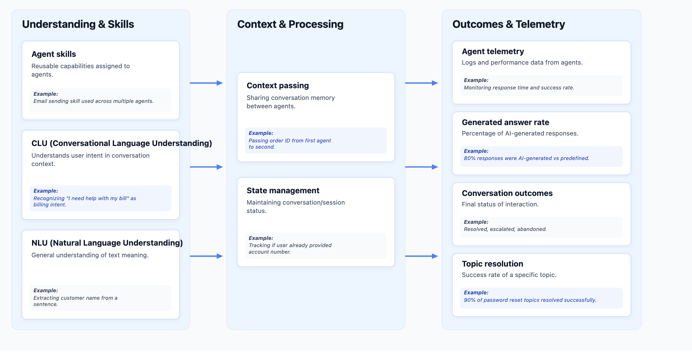
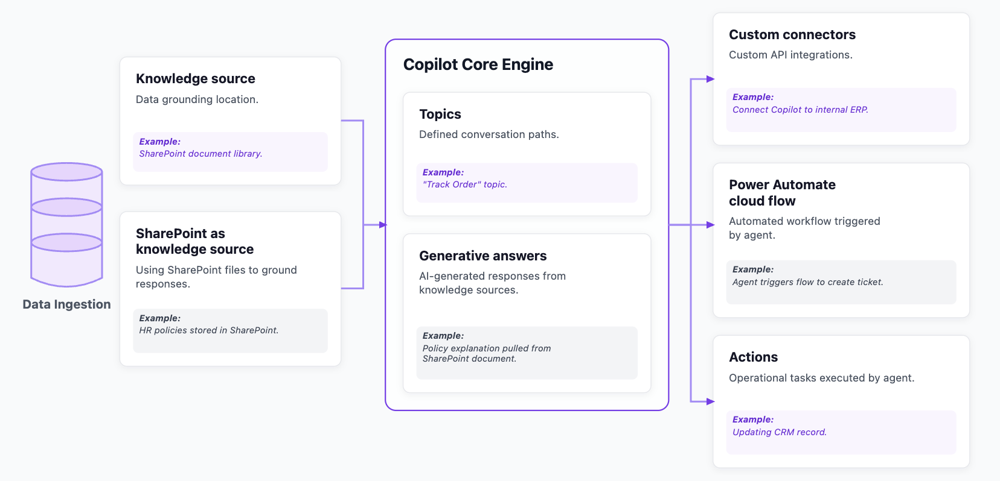
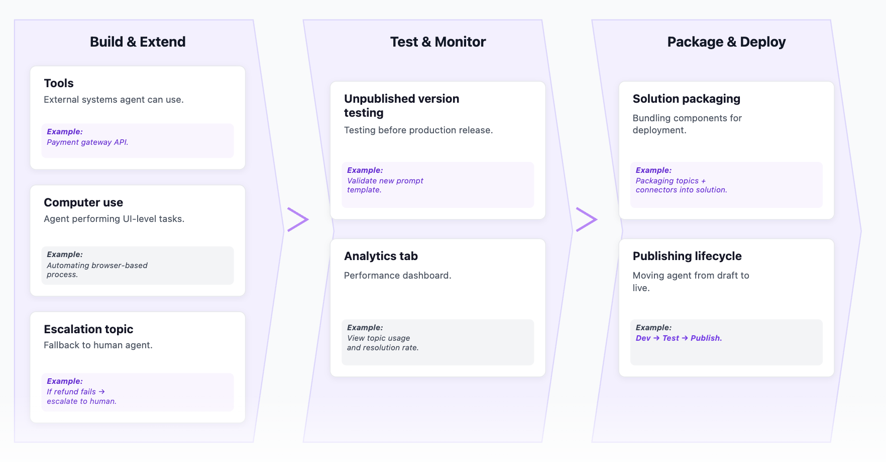
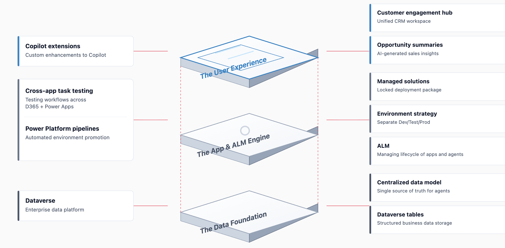
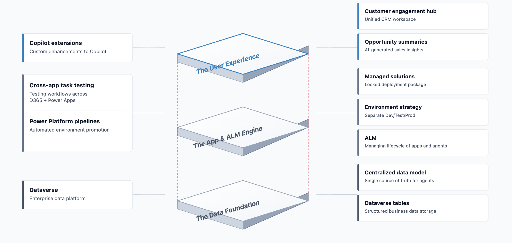
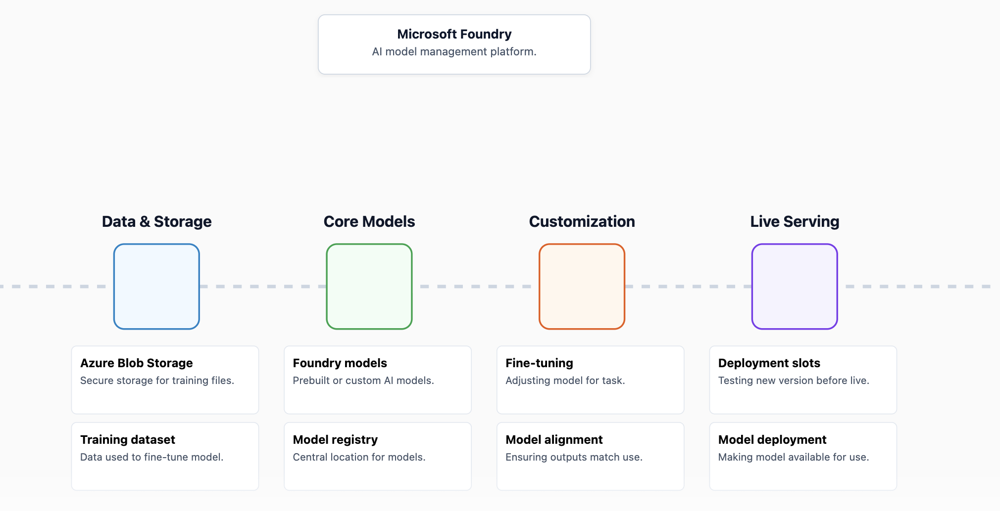

3 AB100 Agentic AI Architect Exam Prep
Microsoft Agentic AI Architect Certification (Full Breakdown + Tips)
Theme 1: Agentic AI Architecture
- Agent-first solution design
- Multi-agent orchestration
- Cross-platform AI solutions
- Copilot Studio agents
- Foundry tools usage
Theme 2: Copilot & Dynamics 365
- Customizing Copilot behavior
- Opportunity summaries
- Copilot Studio analytics
- Agent configuration vs. extension
Note: Heavily scenario-driven content.
Theme 3: Governance & Responsibility
- Microsoft Purview
- RBAC
- Azure Policy
- Data Residency
- Audit Trails
Theme 4: The Security Perimeter
- Azure Monitor
- Prompt Injection Prevention
- Grounding Data Protection
- AI Content Safety
- Defender
Theme 5: ALM & Deployment Strategy
- Power Platform Solutions
- Pipelines
- Environment Strategy
- Quality Gates
Theme 6: Measuring Business Value
Moving beyond technical implementation to business implemenation
Assessing Difficulty Levels
- Architect-level thinking requirked.
- Less coding, more design decisions.
- Prerequisite: Strong grasp of Dynamics 365, Power Platform, Azure AI.
Preparation Protocol
Understand Agentic AI architecture -> Study Governance tools (RBAC, Purview, Policy) -> Master the "When to use what" logic. -> Mental Model: Select the BEST solution, not just a correct one.
Final Deployment Tactics
Keywords to Watch
-
Restrict access
-
Monitor changes
-
Compliance
-
Fine-tuning
-
Grounding data
Execution
-
Read scenarios carefully.
-
Caution on Yes/No hot spots.
-
Manage time strictly.
-
Good luck.
Agentic AI & Architecture Terminology (Part 1)

| 模块名称 | 定义 (Definition) | 示例 (Example) |
|---|---|---|
| Agentic-first design (Agent优先设计) |
Designing systems where AI agents actively drive decisions and workflows. (设计由AI Agent主动驱动决策和工作流的系统。) |
Example: Instead of manually approving invoices, an agent reviews, validates, and routes them automatically. (示例： 代替人工审批发票，由Agent自动进行审核、验证和分发。) |
| AI Agent (AI智能体) |
An AI-powered component that can reason, act, and use tools. (一个具备推理、行动和工具使用能力的AI驱动组件。) |
Example: A support agent that answers customer queries and updates CRM records. (示例： 一个负责回答客户咨询并同步更新CRM记录的支持Agent。) |
| Multi-agent architecture (多智能体架构) |
Multiple agents collaborating to complete workflows. (多个Agent协同配合以完成复杂工作流。) |
Example: Order agent → Validation agent → Notification agent. (示例： 订单Agent → 验证Agent → 通知Agent。) |
| Agent orchestration (智能体编排) |
Coordinating how agents interact and execute tasks. (协调不同Agent之间的交互与任务执行方式。) |
Example: An orchestrator decides whether to route a case to billing agent or support agent. (示例： 编排器决定将案例路由给计费Agent还是支持Agent。) |
| Agent delegation (智能体委派) |
Assigning subtasks to another agent. (将子任务分派给另一个特定的Agent。) |
Example: A customer service agent delegates refund validation to a finance agent. (示例： 客服Agent将退款验证工作委派给财务Agent。) |
| Planner–Executor pattern (规划者-执行者模式) |
One agent plans steps; another executes them. (一个Agent负责规划步骤，另一个Agent负责具体执行。) |
Example: Planner creates workflow steps; executor performs API calls. (示例： 规划者创建工作流步骤，执行者负责调用API接口。) |
| Tool invocation (工具调用) |
Agent calling an external tool/API. (Agent调用外部工具或API接口。) |
Example: Agent calls SAP API to fetch order details. (示例： Agent调用SAP的API来获取订单详情。) |
| Agent flows (智能体工作流) |
Structured workflows guiding agent behavior. (引导Agent行为的结构化工作流。) |
Example: If customer asks refund → check order → validate eligibility → process refund. (示例： 客户请求退款 → 检查订单 → 验证资格 → 处理退款。) |
Agentic AI & Architecture Terminology (Part 2)

| 分类板块 (Columns) | 专业术语 (Terminology) | 概念定义 (Definition) | 具体示例 (Example) |
|---|---|---|---|
| Understanding & Skills (理解与技能) |
Agent skills (智能体技能) |
Reusable capabilities assigned to agents. (分配给智能体的可复用能力。) |
Example: Email sending skill used across multiple agents. (示例： 在多个智能体之间复用发送电子邮件的技能。) |
| CLU (Conversational Language Understanding) (对话语言理解) |
Understands user intent in conversation context. (理解对话上下文中的用户意图。) |
Example: Recognizing "I need help with my bill" as billing intent. (示例： 将“我需要查看我的账单”识别为账单查询意图。) |
|
| NLU (Natural Language Understanding) (自然语言理解) |
General understanding of text meaning. (对文本含义的通用理解。) |
Example: Extracting customer name from a sentence. (示例： 从句子中提取客户的姓名。) |
|
| Context & Processing (上下文与处理) |
Context passing (上下文传递) |
Sharing conversation memory between agents. (在不同的智能体之间共享对话记忆。) |
Example: Passing order ID from first agent to second. (示例： 将订单ID从第一个智能体传递给第二个。) |
| State management (状态管理) |
Maintaining conversation/session status. (维护对话/会话的即时状态。) |
Example: Tracking if user already provided account number. (示例： 追踪并记录用户是否已经提供了账号。) |
|
| Outcomes & Telemetry (结果与遥测) |
Agent telemetry (智能体数据遥测) |
Logs and performance data from agents. (来自智能体的运行日志和性能数据。) |
Example: Monitoring response time and success rate. (示例： 监控响应时间以及任务成功率。) |
| Generated answer rate (生成式回答比例) |
Percentage of AI-generated responses. (由AI自动生成的回答所占的百分比。) |
Example: 80% responses were AI-generated vs predefined. (示例： 80% 的回答为 AI 自动生成，其余为预设回答。) |
|
| Conversation outcomes (对话结果) |
Final status of interaction. (会话交互的最终状态。) |
Example: Resolved, escalated, abandoned. (示例： 已解决、已升级转人工、已放弃。) |
|
| Topic resolution (主题解决率) |
Success rate of a specific topic. (特定主题下的任务解决成功率。) |
Example: 90% of password reset topics resolved successfully. (示例： “密码重置”主题中 90% 的问题均被成功解决。) |
Copilot Studio Terminology (Part 1)

| 架构层级 | 术语名称 (Terminology) | 术语定义 (Definition) | 具体示例 (Example) |
|---|---|---|---|
| Data Ingestion (数据接入与知识源) |
Knowledge source (知识源) |
Data grounding location. (数据定位与检索的底层依据。) |
Example: SharePoint document library. (示例： SharePoint 文档库。) |
| SharePoint as knowledge source (SharePoint 作为知识源) |
Using SharePoint files to ground responses. (利用 SharePoint 文件作为回答问题的基础依据。) |
Example: HR policies stored in SharePoint. (示例： 存储在 SharePoint 中的人力资源政策文档。) |
|
| Copilot Core Engine (核心引擎) |
Topics (主题/对话路径) |
Defined conversation paths. (预先定义好的对话或交互路径。) |
Example: "Track Order" topic. (示例： “追踪订单”主题。) |
| Generative answers (生成式回答) |
AI-generated responses from knowledge sources. (基于知识源自动分析并由 AI 生成的答复。) |
Example: Policy explanation pulled from SharePoint document. (示例： 从 SharePoint 文档中自动提取并生成的政策条款解读。) |
|
| Output / Integrations (执行操作与外部接口) |
Custom connectors (自定义连接器) |
Custom API integrations. (自定义 API 外部接口集成。) |
Example: Connect Copilot to internal ERP. (示例： 将 Copilot 接入公司内部的 ERP 系统。) |
| Power Automate cloud flow (Power Automate 云端流) |
Automated workflow triggered by agent. (由智能体自动触发的自动化工作流流程。) |
Example: Agent triggers flow to create ticket. (示例： Agent自动触发流程去创建工单。) |
|
| Actions (操作/行动) |
Operational tasks executed by agent. (由智能体执行的具体业务操作任务。) |
Example: Updating CRM record. (示例： 更新 CRM 系统中的客户记录。) |
Copilot Studio Terminology (Part 2)

| 业务环节 (Stages) | 核心概念 (Terminology) | 英文定义 (Definition) | 中文解析及示例 (Example) |
|---|---|---|---|
| Build & Extend (构建与扩展) |
Tools (外部工具) |
External systems agent can use. (智能体可直接调用的外部系统。) |
Example: Payment gateway API. (示例： 支付网关服务 API。) |
| Computer use (计算机使用能力) |
Agent performing UI-level tasks. (智能体直接模拟人类在 UI 层面执行的操作。) |
Example: Automating browser-based process. (示例： 自动操作浏览器执行表单填写等任务。) |
|
| Escalation topic (转人工/升级策略) |
Fallback to human agent. (智能体无法处理时，后撤回滚至人工座席的策略。) |
Example: If refund fails → escalate to human. (示例： 若自动退款失败，自动转单给人工客服处理。) |
|
| Test & Monitor (测试与监控) |
Unpublished version testing (未发布版本测试) |
Testing before production release. (在将智能体正式发布至生产环境前的沙盒测试。) |
Example: Validate new prompt template. (示例： 验证新的提示词/Prompt模板效果。) |
| Analytics tab (分析看板) |
Performance dashboard. (用于直观查看运行表现的数据仪表盘。) |
Example: View topic usage and resolution rate. (示例： 查看各个对话主题的使用频率和问题解决率。) |
|
| Package & Deploy (打包与部署) |
Solution packaging (解决方案打包) |
Bundling components for deployment. (将各种组件（如主题、连接器等）打包成一个独立整体，方便分发和迁移。) |
Example: Packaging topics + connectors into solution. (示例： 将对话主题和自定义连接器打包至解决方案中。) |
| Publishing lifecycle (发布生命周期) |
Moving agent from draft to live. (将智能体从草稿阶段正式推向线上生产环境的完整流程。) |
Example: Dev → Test → Publish. (示例： 开发环境 → 测试环境 → 线上正式发布。) |
Dynamics 365 & Power Platform

| 架构分层 | 对应术语 (Terminology) | 英文定义 (Definition) | 中文解析 (Translation/Explanation) |
|---|---|---|---|
| The User Experience (用户体验层) |
Copilot extensions (Copilot 扩展) |
Custom enhancements to Copilot. | 针对 Copilot 的自定义功能增强与扩展。 |
| Customer engagement hub (客户参与中心) |
Unified CRM workspace. | 统一的客户关系管理 (CRM) 工作空间。 | |
| Opportunity summaries (商机摘要) |
AI-generated sales insights. | 由 AI 自动生成的销售洞察与数据分析。 | |
| The App & ALM Engine (应用与生命周期引擎层) |
Cross-app task testing (跨应用任务测试) |
Testing workflows across D365 + Power Apps. | 在 Dynamics 365 和 Power Apps 之间进行的跨工作流验证。 |
| Power Platform pipelines (Power Platform 部署管道) |
Automated environment promotion. | 实现不同环境间（开发/测试/生产）自动晋升部署的管道。 | |
| Managed solutions (托管解决方案) |
Locked deployment package. | 已锁定且不可直接修改的打包部署件。 | |
| Environment strategy (环境策略) |
Separate Dev/Test/Prod. | 划分独立的开发环境、测试环境以及生产环境的规划策略。 | |
| ALM (应用生命周期管理) |
Managing lifecycle of apps and agents. | 全生命周期管理低代码应用及智能体 (Agent) 的生成与演进。 | |
| The Data Foundation (数据基础层) |
Dataverse | Enterprise data platform. | 微软官方提供的企业级统一数据底座与平台。 |
| Centralized data model (集中式数据模型) |
Single source of truth for agents. | 充当智能体的“唯一可信数据源”。 | |
| Dataverse tables (Dataverse 数据表) |
Structured business data storage. | 存储业务数据的各类结构化关系型数据表。 |

| 架构层级 | 专业术语 (Terminology) | 英文定义 (Definition) | 中文原意解析 |
|---|---|---|---|
| The User Experience (用户体验层) |
Copilot extensions (Copilot 扩展) |
Custom enhancements to Copilot. | 用于为 Copilot 引入自定义功能和场景的扩展插件。 |
| Customer engagement hub (客户联合体验中心) |
Unified CRM workspace. | 提供跨业务线一致协作的统一客户关系管理 (CRM) 工作空间。 | |
| Opportunity summaries (商机摘要洞察) |
AI-generated sales insights. | 利用生成式 AI 自动汇总的销售商机摘要与商业洞察。 | |
| The App & ALM Engine (应用与生命周期引擎) |
Cross-app task testing (跨应用自动化测试) |
Testing workflows across D365 + Power Apps. | 跨 Dynamics 365 和 Power Apps 进行的自动化业务流任务校验。 |
| Power Platform pipelines (集成部署管道) |
Automated environment promotion. | 实现各个阶段（开发、测试、生产）之间自动流转的持续部署通道。 | |
| Managed solutions (托管解决方案) |
Locked deployment package. | 处于受保护状态、防止在测试或生产环境中被随意篡改的部署包。 | |
| Environment strategy (环境分发策略) |
Separate Dev/Test/Prod. | 遵循行业最佳实践将开发、测试和生产进行物理隔离的安全策略。 | |
| ALM (应用生命周期管理) |
Managing lifecycle of apps and agents. | 贯穿应用程序和 AI 智能体 (Agent) 开发、集成到上线的整个生命周期。 | |
| The Data Foundation (数据底座层) |
Dataverse | Enterprise data platform. | 微软低代码生态中的企业级关系型数据平台。 |
| Centralized data model (集中式数据模型) |
Single source of truth for agents. | 作为统一的“可信数据源”，保证各个 AI 智能体的数据标准一致。 | |
| Dataverse tables (Dataverse 数据表) |
Structured business data storage. | 用于存储企业核心业务数据的结构化实体表。 |
Microsoft Foundry & Models

| 阶段 (Stage) | 核心术语 (Terminology) | 英文定义 (Definition) | 中文解析 (Explanation) |
|---|---|---|---|
| Data & Storage | Azure Blob Storage | Secure storage for training files. | 用于存储训练数据文件的高度安全云存储。 |
| Training dataset | Data used to fine-tune model. | 专门用于模型微调的基础训练数据集。 | |
| Core Models | Foundry models | Prebuilt or custom AI models. | 平台预构建的或用户自定义的 AI 基础模型。 |
| Model registry | Central location for models. | 用于统一存储、追踪所有可用模型的中央中心。 | |
| Model versioning | Tracking model updates. | 对模型迭代进行版本控制（如 v1.0, v1.1）。 | |
| Customization | Fine-tuning | Adjusting model for task. | 通过特定数据对基础模型进行微调，以适应特定任务。 |
| Model alignment | Ensuring outputs match use. | 确保模型输出内容符合预期的逻辑与道德基准。 | |
| Domain-specific alignment | Tailoring for specific sectors. | 针对医疗、金融等行业进行垂直领域专业化调整。 | |
| Live Serving | Deployment slots | Testing version before live. | 在正式发布前，用于测试新版本模型的灰度部署插槽。 |
| Model deployment | Making model available for use. | 将模型推向生产环境的 API 终点以供业务使用。 |
第一部分：Agentic AI 核心概念与架构设计 (Agentic AI Architecture)
1. 智能体设计模式 (Agent Design Patterns)
- Agentic-first design (智能体优先设计)：将 AI Agent 作为系统的核心驱动力，由其主动做出决策并调度工作流，而非仅作为被动调用的辅助工具。
- 考点：传统工作流（手动审批）与 Agentic 工作流（Agent 自主审计、验证、路由）的区别。
- Single Agent (单智能体) vs. Multi-agent architecture (多智能体架构)：
- AI Agent：具备推理（Reasoning）、行动（Acting）和工具调用（Tool Invocation）能力的独立组件。
- Multi-agent：多个专用 Agent 协同配合完成复杂任务（例如：订单 Agent $\rightarrow$ 验证 Agent $\rightarrow$ 通知 Agent）。
- Agent orchestration (智能体编排)：编排器负责决策任务的路由分配（如：判断该将用户请求分配给“客服 Agent”还是“计费 Agent”）。
- Agent delegation (智能体委派)：一个 Agent 将其子任务委派给另一个更专业的 Agent。
- Planner-Executor pattern (规划者-执行者模式)：
- Planner：负责拆解复杂任务并规划执行步骤。
- Executor：负责调用 API 或工具具体执行每一步骤。
2. 语言理解与状态管理 (Language, Context & State)
- CLU (对话语言理解) vs. NLU (自然语言理解)：
- CLU (Conversational Language Understanding)：专注于对话上下文中的意图识别（Intent）和实体提取（Entities）（例如：将“我需要查看我的账单”识别为
billing意图）。 - NLU (Natural Language Understanding)：更宽泛的自然语言文本含义理解（例如：从一段杂乱的文本中抽取人名或地址）。
- CLU (Conversational Language Understanding)：专注于对话上下文中的意图识别（Intent）和实体提取（Entities）（例如：将“我需要查看我的账单”识别为
- Context passing (上下文传递)：在不同的 Agent 之间共享或传递对话记忆（Conversation Memory）（如：将第一阶段 Agent 收集到的
Order ID传递给第二阶段的退款 Agent）。 - State management (状态管理)：在多轮对话中持续维护会话状态或变量状态（Session Status）（如：记录用户在当前会话中是否已经提供了手机号）。
第二部分：Microsoft Copilot Studio 开发与可扩展性 (Copilot Studio & Extensibility)
本模块关注如何使用 Copilot Studio 快速构建、测试及扩展企业级 Copilot。
1. 知识库集成 (Knowledge Grounding)
- Knowledge source (知识源/数据源)：Copilot 用来进行 RAG（检索增强生成）和回答定位（Grounding）的数据存储位置。
- SharePoint as knowledge source：微软生态中首选的文档知识源。Copilot 可以直接读取 SharePoint 文档库中的 Office 固件、PDF、HR 政策来直接生成回答。
2. 核心交互机制 (Core Interacting)
- Topics (主题)：预先定义的、结构化的对话分支或逻辑路径。
- Generative answers (生成式回答)：当用户提出的问题没有命中预设的 Topics 时，系统利用大模型（LLM）结合绑定的知识源自动生成答复。
3. 可扩展性与操作 (Extensibility & Actions)
- Custom connectors (自定义连接器)：通过 Open API 标准封装的自定义接口，允许 Copilot 调用企业内部系统（如 ERP、CRM）的 API。
- Power Automate cloud flow (云端流集成)：通过无代码/低代码工作流来执行后台自动化任务（如：创建工单、发送邮件、审批流）。
- Actions (操作)：智能体可执行的具体业务操作（如：更新 CRM 记录、重置密码）。
第三部分：生命周期、测试与部署 (ALM, Testing & Deployment)
本模块考察应用生命周期管理（ALM）在 Copilot、Power Platform 和 Azure 上的落地。
1. 测试与监控 (Testing & Monitoring)
- Unpublished version testing (未发布版本测试)：在测试沙盒（Sandbox）中对未公开的版本进行 Prompt 调试和逻辑验证。
- Analytics tab (分析看板)：通过性能仪表盘监控 Copilot 的使用情况（如：会话量、问题解决率 Resolution Rate、人工转接率 Escalation Rate）。
- Escalation topic (转人工主题)：当 AI 无法解决问题（例如退款失败）时，自动触发回滚并转接给人工客服的兜底路径。
2. 环境策略与 ALM (Environment Strategy & ALM)
- Environment strategy (环境策略)：必须严格隔离开发 (Dev) $\rightarrow$ 测试 (Test) $\rightarrow$ 生产 (Prod) 环境。
- Power Platform pipelines (管道自动化)：用于在不同 Power Platform 环境之间自动化迁移和晋升解决方案。
- Solution packaging (解决方案打包)：将 Topics、Connectors、Flows 等所有组件打包在一起，便于统一分发。
- 考点：Managed solutions (托管解决方案)（只读，部署到生产环境）与 Unmanaged solutions (非托管解决方案)（可编辑，用于开发环境）的区别。
第四部分：Microsoft Foundry 与大模型管理 (Foundry & Model Lifecycle)
本模块考察企业级大模型（Foundation Models）的管理、微调与托管部署。
1. 模型资产管理 (Model Assets)
- Azure Blob Storage：企业用于存储原始训练数据、微调数据或日志文件的安全云存储空间。
- Foundry models：由微软或合作伙伴（如 OpenAI, Meta）提供的、开箱即用的预构建基础大模型。
- Model registry (模型注册表)：集中管理、追踪和记录企业内部所有可用模型资产的中央仓库。
- Model versioning (模型版本控制)：追踪模型的更新迭代版本（如：
v1.0$\rightarrow$v1.1）。
2. 模型定制与部署 (Customization & Serving)
- Fine-tuning (微调)：使用特定领域的训练集对基础模型进行参数调整，使其在特定任务上表现更专业。
- Model alignment (模型对齐)：利用强化学习（如 RLHF）或系统提示词（System Prompts），确保模型的输出安全、符合人类道德、避免幻觉。
- Deployment slots (部署插槽)：支持蓝绿部署或灰度测试，在将新模型完全推向生产环境前，先在备用插槽中进行验证。
第五部分：安全、治理与合规 (Governance, Security & Compliance)
本模块是任何 Azure 企业级 AI 考试的高频重难点，考察多层防御（Defense-in-Depth）安全架构。
[ 1. Outer Ring: Monitoring & Posture ]
- Defender for Cloud (态势)
- Azure Monitor (指标) / App Insights (Telemetry)
▼
[ 2. Middle Ring: Policy & Filters ]
- Azure AI Content Safety (过滤)
- Microsoft Purview (治理)
- Data Residency (合规)
▼
[ 3. Inner Core: Identity ]
- Azure RBAC (授权)
- Azure Policy (规则)
1. 内环：身份与基础安全 (Identity & Foundation)
- Azure RBAC (基于角色的访问控制)：控制“谁”（用户、服务主体）有权操作“什么资源”（如：只有 AI 开发者才能读取模型终点）。
- Azure Policy (安全策略)：强制执行资源配置合规规则（如：禁止创建不带加密的存储账户、强制要求所有 AI 服务必须启用专用终点 Private Endpoint）。
- Access control (访问控制)：最小特权原则，限制和阻断不必要的网络和实体访问。
2. 中环：合规与内容过滤 (Policy & Filters)
- Azure AI Content Safety (内容安全)：实时检测并阻断有害的输入 (Prompt Injection/Jailbreak) 和输出 (Hate speech/Violence)。
- Data residency (数据落地限制)：确保数据处理和存储始终保留在合规和法律允许的指定地理区域（Geo-Region）内。
- Microsoft Purview (数据治理)：对 AI 训练或使用的数据进行敏感度标记（Sensitivity Labels）、防泄露（DLP）以及全链路审计。
3. 外环：监控与态势感知 (Monitoring & Posture)
- Defender for Cloud：提供全局云安全态势管理 (CSPM)，主动扫描并发现 AI 应用架构中的漏洞和配置缺陷。
- Azure Monitor & Application Insights：收集 AI 应用的日志、延迟、调用成功率和会话遥测数据，实现近乎实时的监控与告警。
This video serves as Module 0: Foundations for the AB-100 certification, which prepares learners to become a Microsoft Certified: Agentic AI Business Solutions Architect.
Course Overview and Structure: * The training includes 9 modules, 42 hours of instruction, and 20 hours of hands-on assignments (2:05-3:41). * The curriculum is divided into three key domains: Plan (Modules 1-3), Deploy (Modules 4-6), and practical application (Modules 7-9) (2:50-3:38).
Key Foundational Concepts: * Agentic AI Evolution: The video traces the history from rule-based bots to current autonomous agents that can plan, take action, use tools, and iterate to solve complex problems (4:00-6:10). * Core Building Blocks: Six fundamental elements are identified: LLMs (reasoning), Grounding (data connection), Orchestration (workflow coordination), Tools (external integration), Memory (short and long-term), and Human-in-the-loop (oversight) (6:13-9:00). * Agent Taxonomy: Microsoft classifies agents into three types: Task agents (well-defined, single functions), Prompt agents (LLM-driven, conversational), and Autonomous agents (proactive, multi-step workflows) (9:02-10:48).
Microsoft AI Platform Ecosystem: * Microsoft (Azure) AI Foundry: The underlying infrastructure for professional-grade, enterprise-scale AI development (10:50-11:32, 14:00-15:40). * Power Platform AI: Targeted at makers and business analysts, utilizing tools like AI Builder, Power Automate, and Copilot Studio (11:33-11:51, 15:42-17:01). * Copilot Experiences: User-facing interfaces integrated into M365, Dynamics 365, and GitHub (11:52-12:12, 12:22-13:58).
Exam Strategy & Tips: * The AB-100 exam is a 120-minute, scenario-based assessment focused on judgment, governance, and architecture (19:14-19:58). * Key focus areas include understanding managed vs. unmanaged solutions, the six principles of Responsible AI, and licensing prerequisites (e.g., M365 Copilot requiring an E3 or E5 license) (19:59-22:23).
The session concludes with a knowledge check emphasizing that Copilot Studio is the primary low-code/no-code platform for building and deploying AI agents (23:10-23:59).